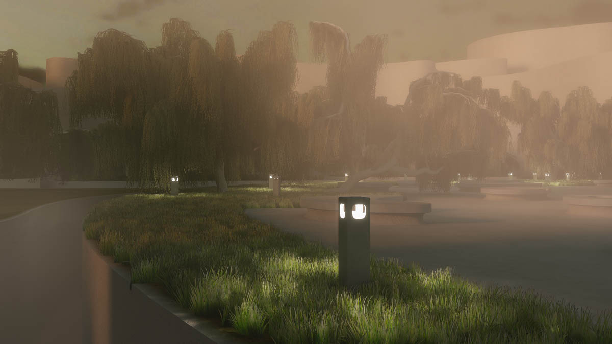
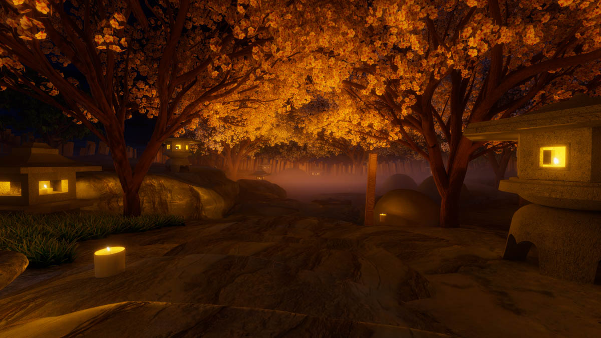
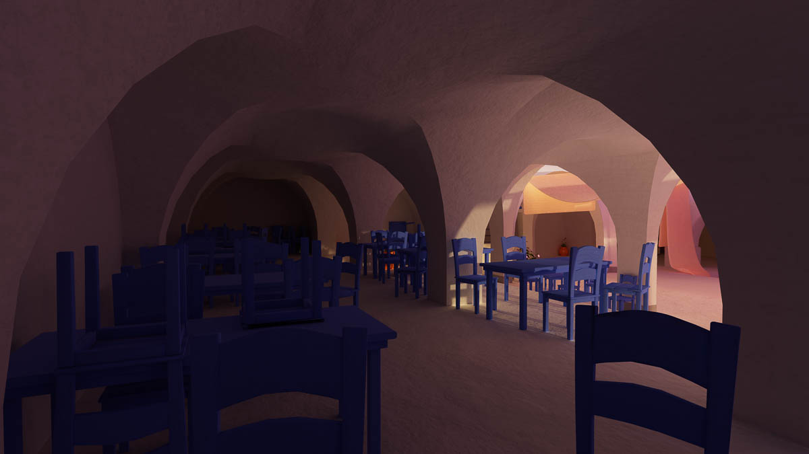
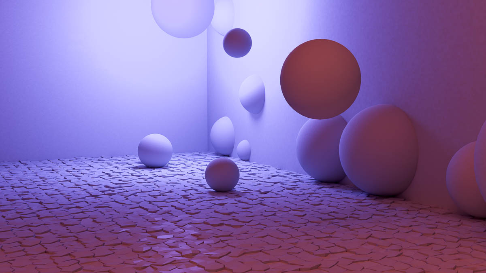
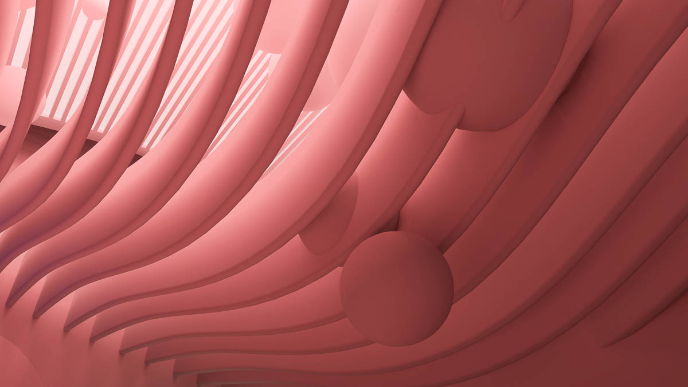
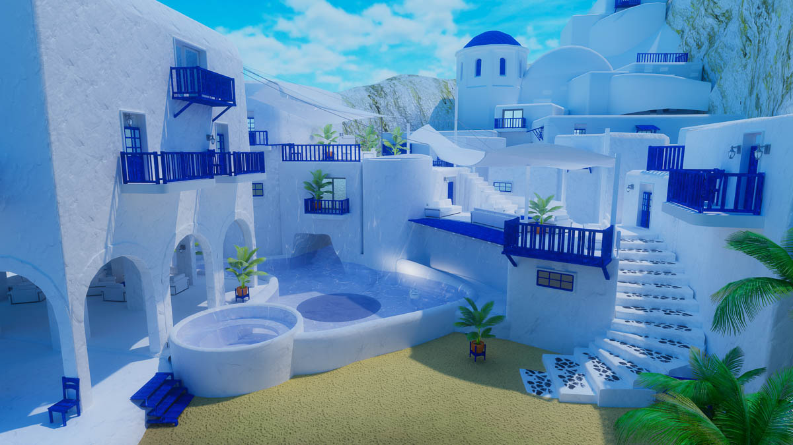
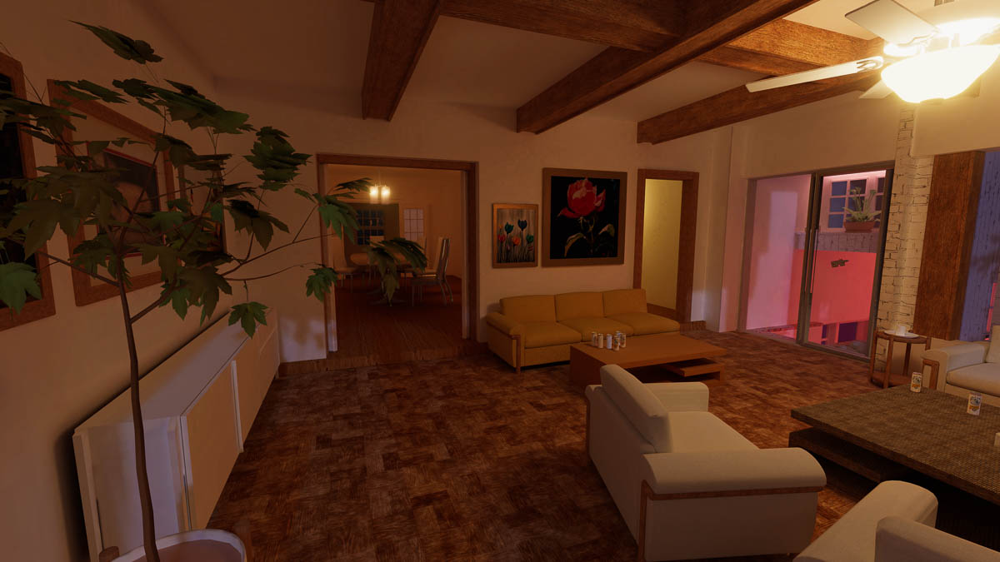
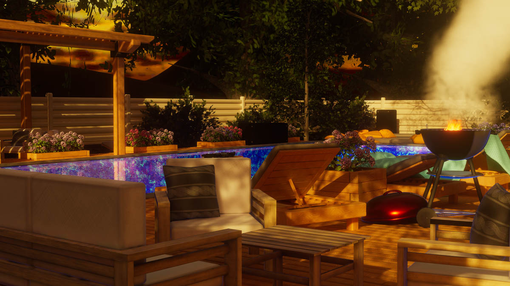

These are some of the 3D Environments i've build in the last 3 years. Each photo is taken straight from the client of a living, runnning unity program. Every space was sculpted, unwrapped, decorated, and lit by me
Spaces lit dynamically based on a video screen:
Softly lit room with adjustable spherical lamps
Small dance music venue with independently lit ceiling tiles
Field of flowers, where an invisible video stream determines height and color seperately
Private event space where screens are softly added to the concrete surfaces
Baked volumetrics:

Upper meeting area from a cloth based performance space, collaboration with visual artist iggi. Short list for the Venice Film Festival Immersive Competition 2025

Personal misty onsen space
Basement space with carefully baked volume of light, modified and colored at runtime for a dance party. Event was a collaboration with visual artist and programmer Raz who developed her own interface to maniplulate Frostbone's volumetric fog in line with Pi's LTCGI before anyone else
Soft, bouncing indirect light:

Pool party / outdoor music venue with interactive floaties


Test world used for a new, hyper-soft method of realtime illumination I developed that refferences 8 channels of baked lighting information for every mesh, created over 5 unique light bakes

Custom caustics shader written for a cozy space under the pool
Realism / recreated spaces:

recreated living room of a shared airbnb

Realistic Pool / BBQ to fill out the empty backyard of a friend's house party space. Studied wood / deck construction to build the backyard board by board